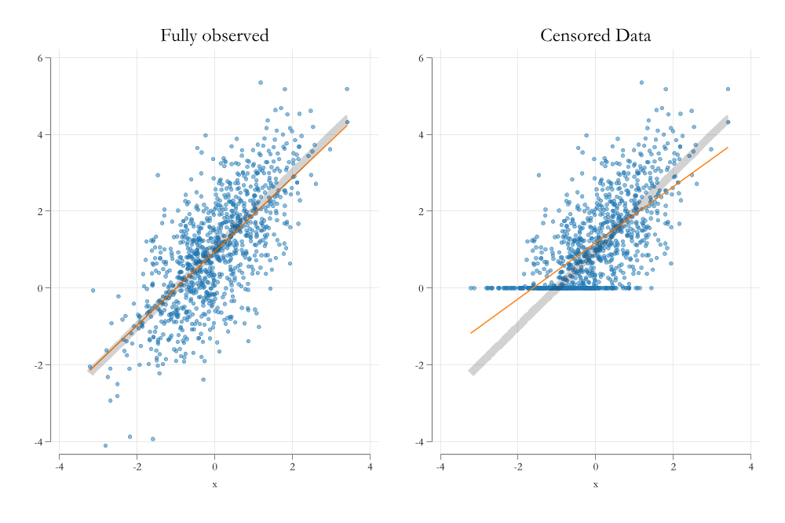

Research Methods II
Session 2: MLE & Limited Dependent Variables
Introduction to Maximum Likelihood Estimation
- This is something we have seen before.
- MLE is a method to estimate parameters of a model.
- It can be used to estimate paramaters of linear and nonlinear models
- The idea is to find the values of the parameters that maximize the likelihood function.
- But what does it mean?
The likelihood function is the probability of observing the data given the parameters of the model.
So, MLE tries to maximize that probability, under the assumption that we know the distribution of the data.
In other words, we try to identify distributions! (not only conditional mean functions)
Example
Data

MLE estimation
To identify the parameters of the model, we need to impose assumptions about the distribution of the data.
For simplicitly, lets make the assumption that the data is normally distributed.
The likelihood function for a single observation is:
\[L_i(\mu,\sigma) = \frac{1}{\sigma\sqrt{2\pi}} e^{ -\frac{1}{2}\left(\frac{y_i-\mu}{\sigma}\right)^2 }\]
- And under independent observations assumptions, the Likelihood function for the sample is:
\[LL(\mu,\sigma) = \prod_{i=1}^n L_i(\mu,\sigma)\]
Graphical representation
How Good we did?

LR as an MLE
We already know that LR can be easily estimated using OLS. \[\beta = (X'X)^{-1}X'y\]
But we can also estimate it using MLE.
Consider the following model: \[Y_i = \beta_0 + \beta_1 X_{1i} + \beta_2 X_{2i} + \epsilon_i\]
To estimate the parameters using MLE, we need to make assumptions about the distribution of the error term or the dependent variable.
\[Y_i \sim N(x_i'\beta, \sigma^2)\]
- Under that assumption, the likelihood function for a single observation is:
\[L_i(\beta,\sigma) = \frac{1}{\sigma\sqrt{2\pi}} e^{ -\frac{1}{2}\left(\frac{y_i-x_i'\beta}{\sigma}\right)^2 }\]
Which can be used to construct the MLE estimator for OLS.
Plot-twist: The MLE estimator for OLS is the same as the OLS estimator.
Limited Dependent Variables
Limited Dependent Variables
- Limited dependent variables are variables that are limited in their range of values.
- For example, binary variables, or variables that are bounded between 0 and 1.
- Or variables that are bounded between 0 and some positive number.
- Or variables bounded to take only positive values.
- etc
- Very Special Case: Endogenous Sample Selection
- Looks unbounded, but you only observe a subset of the population.
Binary Data: LPM/Probit/logit
- Probit and logit are two models that are used to model binary dependent variables. (Dummies)
- You can also use OLS (LPM), but has drawbacks
- You also need to make sure your Dependent Variable is binary!
- When your Dep variable is binary, your goal is determine the probability of observing a 1 (success) of something to happen given a set of covariates.
\[P(y_i=1|x_i) = G(x_i'\beta)\]
The choice of \(G\) is what makes the difference between LPM, a probit and logit.
Probit/Logit
LOGIT
\[G(Z) = \frac{e^{Z}}{1+e^{Z}} = \Lambda(Z)\]
Probit
\[G(Z) = \int_{-\infty}^z \phi(v) dv = \Phi(Z)\]
Both make sure that \(0\leq G(Z) \leq 1\), which doesnt happen with LPM (\(G(Z)=Z\))
And with this, we can use MLE to estimate the parameters of the model.
\[LL(\beta) = \prod_{i=1}^n G(x_i'\beta)^{y_i} (1-G(x_i'\beta))^{1-y_i}\]
One could also think of the probit and logit as a transformation of a latent variable \(Y^*\).
\[Y^*_i = x_i'\beta + \epsilon_i\]
- The latent variable is not observed. However, when \(Y^*_i>0\), we observe \(Y_i=1\).
Here the probabilty of observing a \(Y_i=1\) is:
\[\begin{aligned} P(y_i=1|x_i) &= P(y^*_i>0|x_i) = P(x_i'\beta + \epsilon_i>0|x_i) \\ &= P( \epsilon_i>-x_i'\beta |x_i) = 1-P( \epsilon_i<-x_i'\beta |x_i) \\ &= 1-G(-x_i'\beta) \end{aligned} \]
And if \(G'\) is symetrical (logit/probit/lpm):
\[P(y_i=1|x_i) = G(x_i'\beta)\]
Marginal Effects and testing
- LPM estimates can be interpreted Directly as the change in P(y=1|X)
- For Logit and probit, we need to compute the marginal effects.
\[P(y_i=1|x_i) = G(x_i'\beta)\]
\[\frac{\partial P(y_i=1|x_i)}{\partial x_{ij}} = g(x_i'\beta)\beta_j\]
- For testing,
- You can use the t-test (or z-test for logit/probit) for coefficients or marginal effects
- Or use LR test for joint significance of a set of coefficients.
\[LR = 1- 2 (LL_ur - LL_r) \sim \chi^2_q\]
Example Stata
Load the data
webuse nhanes2d, clear
des highbp height weight age female
sum highbp height weight age female i.race [w=finalwgt]
Variable Storage Display Value
name type format label Variable label
-------------------------------------------------------------------------------
highbp byte %8.0g * High blood pressure
height float %9.0g Height (cm)
weight float %9.0g Weight (kg)
age byte %9.0g Age (years)
female byte %8.0g female Female
Variable | Obs Weight Mean Std. dev. Min Max
-------------+-----------------------------------------------------------------
highbp | 10,351 117157513 .3685423 .4824328 0 1
height | 10,351 117157513 168.4599 9.699111 135.5 200
weight | 10,351 117157513 71.90064 15.43281 30.84 175.88
age | 10,351 117157513 42.25264 15.50249 20 74
female | 10,351 117157513 .5206498 .4995975 0 1
-------------+-----------------------------------------------------------------
|
race |
White | 10,351 117157513 .8791545 .3259634 0 1
Black | 10,351 117157513 .0955059 .2939267 0 1
Other | 10,351 117157513 .0253396 .1571621 0 1Estimate mode: LPM using weights
reg highbp height weight age female i.race [pw=finalwgt]
* or svy: reg highbp height weight age female i.race (sum of wgt is 117,157,513)
Linear regression Number of obs = 10,351
F(6, 10344) = 531.97
Prob > F = 0.0000
R-squared = 0.2110
Root MSE = .42864
------------------------------------------------------------------------------
| Robust
highbp | Coefficient std. err. t P>|t| [95% conf. interval]
-------------+----------------------------------------------------------------
height | -.006271 .0008179 -7.67 0.000 -.0078742 -.0046677
weight | .0097675 .000369 26.47 0.000 .0090441 .0104909
age | .0096675 .0002984 32.40 0.000 .0090826 .0102524
female | -.0794025 .0142293 -5.58 0.000 -.1072948 -.0515103
|
race |
Black | .0647166 .0170488 3.80 0.000 .0312977 .0981355
Other | .0869917 .0381158 2.28 0.022 .0122775 .161706
|
_cons | .347133 .1403729 2.47 0.013 .0719749 .622291
------------------------------------------------------------------------------Estimate mode: Logit using weights
logit highbp height weight age female i.race [pw=finalwgt]
* or svy: reg highbp height weight age female i.race
Iteration 0: Log pseudolikelihood = -77110184
Iteration 1: Log pseudolikelihood = -63830529
Iteration 2: Log pseudolikelihood = -63604963
Iteration 3: Log pseudolikelihood = -63604252
Iteration 4: Log pseudolikelihood = -63604252
Logistic regression Number of obs = 10,351
Wald chi2(6) = 1473.91
Prob > chi2 = 0.0000
Log pseudolikelihood = -63604252 Pseudo R2 = 0.1752
------------------------------------------------------------------------------
| Robust
highbp | Coefficient std. err. z P>|z| [95% conf. interval]
-------------+----------------------------------------------------------------
height | -.0328739 .0045382 -7.24 0.000 -.0417687 -.0239791
weight | .0514503 .0022181 23.20 0.000 .0471028 .0557977
age | .0496323 .0017152 28.94 0.000 .0462706 .052994
female | -.4472131 .0777753 -5.75 0.000 -.5996498 -.2947764
|
race |
Black | .351346 .0915423 3.84 0.000 .1719264 .5307656
Other | .4929785 .1961652 2.51 0.012 .1085017 .8774552
|
_cons | -.7501284 .7683899 -0.98 0.329 -2.256145 .7558881
------------------------------------------------------------------------------Joint significance test
( 1) [highbp]2.race = 0
( 2) [highbp]3.race = 0
chi2( 2) = 20.25
Prob > chi2 = 0.0000Marginal Effects: You need to use margins command
Average marginal effects Number of obs = 10,351
Model VCE: Robust
Expression: Pr(highbp), predict()
dy/dx wrt: height weight age female 2.race 3.race
------------------------------------------------------------------------------
| Delta-method
| dy/dx std. err. z P>|z| [95% conf. interval]
-------------+----------------------------------------------------------------
height | -.0059971 .0008145 -7.36 0.000 -.0075936 -.0044007
weight | .009386 .0003507 26.76 0.000 .0086985 .0100734
age | .0090543 .0002562 35.34 0.000 .0085522 .0095564
female | -.0815842 .0141075 -5.78 0.000 -.1092344 -.0539339
|
race |
Black | .0654291 .0173285 3.78 0.000 .0314659 .0993923
Other | .0925816 .03772 2.45 0.014 .0186517 .1665115
------------------------------------------------------------------------------
Note: dy/dx for factor levels is the discrete change from the base level.Predicted Probabilities
From here, we could also predict HighBP
Tobit
Tobit
Tobit models are to analyze data with censored information.
Censored data means that the data is there… but you dont know the exact value.
For example, if you have data on income, but you only know that some people earn less than 10K, but you dont know how much less.
The fact that you can see the data, even if you do not know the exact value, helps you to estimate the parameters of the model.
Visualizing the problem
Visualizing the problem
Tobit Model
- The idea of the Tobit model is “model” not only why \(y\) changes when \(X\) changes, but also why y is censored.
- Although you do that with the same parameters, under normality assumptions.
- When the data is censored, the likelihood function is similar to a probit model, when the data is not censored, the likelihood function is similar to a linear model:
\[\begin{aligned} L_i(\beta,\sigma) &= \Phi\left(\frac{y^c-x_i'\beta}{\sigma}\right) \text{if } y_i = y^c \\ L_i(\beta,\sigma) &= \frac{1}{\sigma\sqrt{2\pi}} e^{ -\frac{1}{2}\left(\frac{y_i-x_i'\beta}{\sigma}\right)^2 } \text{if } y_i > y^c \end{aligned} \]
Estimation Stata
In Stata, you can estimate a Tobit model using the tobit command.
tobit y x1 x2 x3, ll(#)
y: dependent variablex1 x2 x3: independent variablell(#): is the value of the censoring point.
Visualizing the solution
Tobit: Interpretation
Latent Variable
- The easiest to interpret is the latent variable.
- For example, say that you are interested in the effect of education on wages, but wages are censored at 10.
- In this case the coefficients of the Tobit model are the same as the coefficients of the linear model.
tobit y x, ll(0)
- use
marginsif you have interactions or polynomial terms.
Data is Corner Solution:
- If data is corner solution, then you need to decide what to interpret.
- For example, say you are interested in the effect of education hours of work
- Hours of work cannot fall below 0.
- But you know education has a positive effect (on something)
- Would you be interested in the effect on the probability of working?
- The effect on hours of work for those who work?
- The overall average effect on hours of work? (some will enter the labor force, some will work more hours)
Probability of Working
\[P(y_i>0|x_i) = \Phi\left(\frac{x_i'\beta}{\sigma}\right)\]
margins, dydx(x) predict(pr(0,.))
predict(pr(0,.))says you are interested in the probability that data was not censored…or in this case that was not a corner solution
E(Y|Y>0,X)
\[\begin{aligned} y_i &= x_i'\beta + \epsilon_i \ || E(|y>0,X) \\ E(y_i|y_i>0,x_i) &= x_i'\beta + \sigma\lambda\left(\frac{x_i'\beta}{\sigma}\right) \\ \lambda(z) &= \frac{\phi(z)}{\Phi(z)} \end{aligned} \]
This is the expected value of the latent variable, conditional on the latent variable being positive.
margins, dydx(x) predict(e(0,.))
predict(e(0,.))says you are interested in the expected change only for those who currently work.
E(Y|X)
\[\begin{aligned} E(y_i|x_i) &= E(y_i|y_i>0,x_i) * P(y_i>0|x_i) + 0 * (1-P(y_i>0|x_i)) \\ E(y_i|x_i) &= \Phi\left(\frac{x_i'\beta}{\sigma}\right) \left( x_i'\beta + \sigma\lambda\left(\frac{x_i'\beta}{\sigma}\right)\right) \\ E(y_i|x_i) &= \Phi\left(\frac{x_i'\beta}{\sigma}\right) x_i'\beta + \sigma \phi\left(\frac{x_i'\beta}{\sigma}\right) \end{aligned} \]
margins, dydx(x) predict(ystar(0,.))
predict(ystar(0,.))says you are interested in the average effect considering those who work and those who do not work.
Visualizing the solution

Sample Selection: Heckman
Exogenous Sample Selection
First: Samples already represent a selection of the population.
- however, because the selection is random, all assumptions of OLS are satisfied. (if they are true for the population.)
Second: Some times selection may not be random, but based on observed (and control) characteristics
- Not a problem either. Since you could at least say something for those you observe. (if you have the right variables)
- This was exogenous sample selection.
ie: You want to estimate the effect of education on wages, but you only have data for highly educated people.

Endogenous Sample Selection
Third: Selection may be based on unobserved characteristics.
- This is a problem. The reason why we do not observe data is for unknown reasons (part of the error).
- Because we cannot control for it, it will bias our estimates. (like omitted variable bias)
- This is endogenous sample selection.
ie: - You want to estimate the effect of education on wages, but you only have data for those who work. - Those who work do so because they may have been offer higher wages for unknown reasons. (high skill? high motivation? )

Heckman Selection Model
The Heckman selection model is an estimation method that allows you to correct a specific kind of endogenous sample selection.
Consider the following model:
\[y_i = x_i'\beta + \epsilon_i\]
In absence of selection, we can assume standard assumtions and estimate the model using OLS.
However, if we have endogenous selection, usually means that we have a second equation that determines the selection.
\[s_i^* = z_i'\gamma + \eta_i\]
The Full model:
\[\begin{aligned} y_i &= x_i'\beta + \epsilon_i \text{ if } s_i^*>0 \\ s_i^* &= z_i'\gamma + \eta_i \\ \epsilon &\sim N(0,\sigma_\epsilon) \\ \eta &\sim N(0,1) \\ corr(\epsilon,\eta) &= \rho \end{aligned} \]
- \(x_i\) and \(z_i\) are not necessarily the same. But they are exogenous to the error terms.
- The selection equation depends on observable \(z_i\) and unobservable \(\eta_i\) factors.
- The unobserable factors are correlated with the error term of the main equation.
- The problem: if \(\rho\neq 0\) then \(E(\epsilon|s_i^*>0,x_i) \neq 0\).
Solution
- The solution is to “control” for the unobserved factors that are correlated with \(\epsilon\).
\[\begin{aligned} y_i &= x_i'\beta + \epsilon_i \ || \ E( * |x_i,s_i^*>0) \\ E(y_i|x_i,s_i^*>0) &= x_i'\beta + E(\epsilon_i|x,z,\eta, s_i^*>0) \\ &= x_i'\beta + E(\epsilon_i|\eta,s_i^*>0) \\ &= x_i'\beta + \rho \frac{\phi(z_i'\gamma)}{\Phi(z_i'\gamma)} \\ &= x_i'\beta + \rho \lambda (z_i'\gamma) \\ \end{aligned} \]
Thus the new model is:
\[y_i = x_i'\beta + \rho \lambda (z_i'\gamma) + \varepsilon_i\]
where \(\gamma\) is estimated using a probit model.
Implementation
- Two options:
- Estimate both outcome and selection equation jointly using MLE.
- Requires careful setup of the likelihood function.
- Imposes the assumption of joint normality of the error terms.
- Estimate it using a two-step procedure.(Heckit)
- Estimate the selection equation using probit. \(z_i'\gamma\)
- Estimate the outcome equation using OLS, inclusing inverse mills ratio. \(\lambda (z_i'\gamma)\)
- Std Errs need to be corrected
- Consideration: In contrast with IV, Heckman does not require an instrument, but having one is highly recommended.
Example Stata
Lets start by loading some data
Contains data from https://www.stata-press.com/data/r18/womenwk.dta
Observations: 2,000
Variables: 6 3 Mar 2022 07:43
-------------------------------------------------------------------------------
Variable Storage Display Value
name type format label Variable label
-------------------------------------------------------------------------------
county byte %9.0g County of residence
age byte %8.0g Age in years
education byte %8.0g Years of schooling
married byte %8.0g 1 if married spouse present
children byte %8.0g # of children under 12 years old
wage float %9.0g Hourly wage; missing, if not
working
-------------------------------------------------------------------------------
Sorted by: In Stata, we can use command heckman to estimate the Heckman selection model, but lets start by doing this manually
Iteration 0: Log likelihood = -1266.2225
Iteration 1: Log likelihood = -1031.4962
Iteration 2: Log likelihood = -1027.0625
Iteration 3: Log likelihood = -1027.0616
Iteration 4: Log likelihood = -1027.0616
Probit regression Number of obs = 2,000
LR chi2(4) = 478.32
Prob > chi2 = 0.0000
Log likelihood = -1027.0616 Pseudo R2 = 0.1889
------------------------------------------------------------------------------
works | Coefficient Std. err. z P>|z| [95% conf. interval]
-------------+----------------------------------------------------------------
married | .4308575 .074208 5.81 0.000 .2854125 .5763025
children | .4473249 .0287417 15.56 0.000 .3909922 .5036576
education | .0583645 .0109742 5.32 0.000 .0368555 .0798735
age | .0347211 .0042293 8.21 0.000 .0264318 .0430105
_cons | -2.467365 .1925635 -12.81 0.000 -2.844782 -2.089948
------------------------------------------------------------------------------This selection equation can be interpreted the usual way
The outcome model:
Source | SS df MS Number of obs = 1,343
-------------+---------------------------------- F(3, 1339) = 173.01
Model | 14904.6806 3 4968.22688 Prob > F = 0.0000
Residual | 38450.214 1,339 28.7156191 R-squared = 0.2793
-------------+---------------------------------- Adj R-squared = 0.2777
Total | 53354.8946 1,342 39.7577456 Root MSE = 5.3587
------------------------------------------------------------------------------
wage | Coefficient Std. err. t P>|t| [95% conf. interval]
-------------+----------------------------------------------------------------
education | .9825259 .0504982 19.46 0.000 .8834616 1.08159
age | .2118695 .0206636 10.25 0.000 .171333 .252406
mill | 4.001616 .5771027 6.93 0.000 2.869492 5.133739
_cons | .7340391 1.166214 0.63 0.529 -1.553766 3.021844
------------------------------------------------------------------------------Lets compare the outcome with Stata’s Heckman
esttab ols hkit hecktwo heckmle, se(%9.3f) b(%9.3f) star(* 0.10 ** 0.05 *** 0.01) nogaps mtitle(OLS Heckit Hkm-two Hkm-mle) nonum
----------------------------------------------------------------------------
OLS Heckit Hkm-two Hkm-mle
----------------------------------------------------------------------------
main
education 0.897*** 0.983*** 0.983*** 0.990***
(0.050) (0.050) (0.054) (0.053)
age 0.147*** 0.212*** 0.212*** 0.213***
(0.019) (0.021) (0.022) (0.021)
mill 4.002***
(0.577)
_cons 6.085*** 0.734 0.734 0.486
(0.890) (1.166) (1.248) (1.077)
----------------------------------------------------------------------------
works
married 0.431*** 0.445***
(0.074) (0.067)
children 0.447*** 0.439***
(0.029) (0.028)
education 0.058*** 0.056***
(0.011) (0.011)
age 0.035*** 0.037***
(0.004) (0.004)
_cons -2.467*** -2.491***
(0.193) (0.189)
----------------------------------------------------------------------------
/mills
lambda 4.002***
(0.607)
----------------------------------------------------------------------------
/
athrho 0.874***
(0.101)
lnsigma 1.793***
(0.028)
----------------------------------------------------------------------------
N 1343 1343 2000 2000
----------------------------------------------------------------------------
Standard errors in parentheses
* p<0.10, ** p<0.05, *** p<0.01Interpretation
It depends…
but the most likely scenario is to interpret the outcomes for everyone (thus just look at coefficients of the outcome equation)
But you can also obtain effects for those who work, or the average effect.
The Mills ratio can be interpreted as the direction of the selection.
- If positive, then those who work are those who earn more
- If negative, then those who work are those who earn less
Extra example
esttab ols hk_mle hk_two, se(%9.3f) b(%9.3f) star(* 0.10 ** 0.05 *** 0.01) nogaps mtitle(OLS Heckit Hkm-two) nonum
------------------------------------------------------------
OLS Heckit Hkm-two
------------------------------------------------------------
main
educ 0.087*** 0.091*** 0.094***
(0.005) (0.005) (0.006)
exper 0.011*** 0.011*** 0.010***
(0.002) (0.002) (0.002)
tenure 0.008*** 0.008*** 0.007***
(0.002) (0.002) (0.002)
_cons 2.140*** 2.079*** 2.024***
(0.065) (0.067) (0.072)
------------------------------------------------------------
lfp
educ 0.168*** 0.183***
(0.025) (0.025)
age -0.028*** -0.029***
(0.006) (0.006)
married -0.853*** -0.832***
(0.191) (0.185)
divorced -0.324 -0.239
(0.229) (0.222)
kids6 -0.590*** -0.573***
(0.069) (0.070)
kids714 -0.318*** -0.307***
(0.057) (0.058)
_cons 1.454*** 1.313***
(0.336) (0.355)
------------------------------------------------------------
/
athrho 0.343***
(0.082)
lnsigma -0.750***
(0.020)
------------------------------------------------------------
/mills
lambda 0.293***
(0.066)
------------------------------------------------------------
N 1434 1647 1647
------------------------------------------------------------
Standard errors in parentheses
* p<0.10, ** p<0.05, *** p<0.01The End…
Til next week